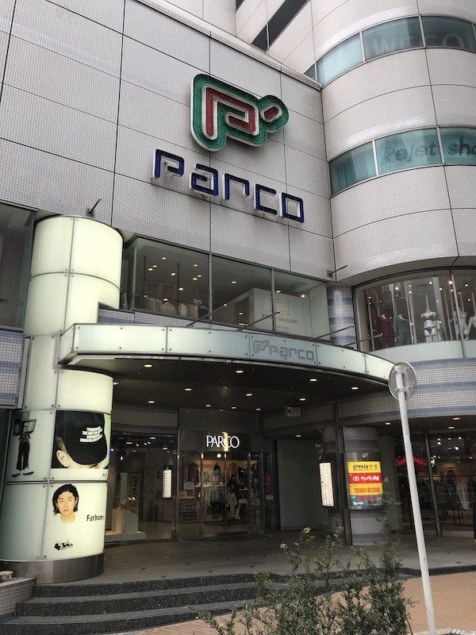
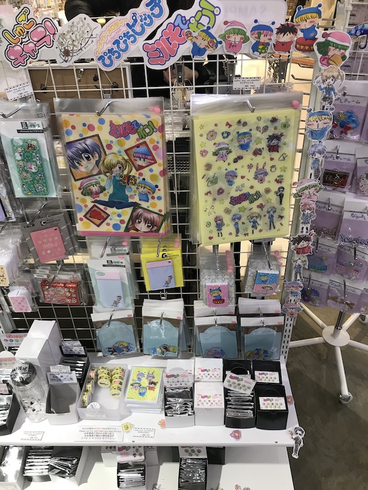
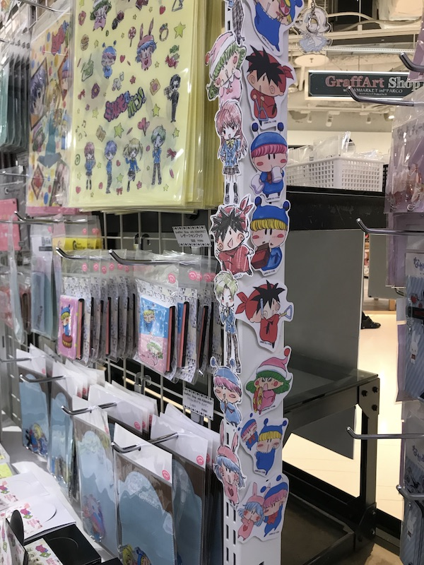
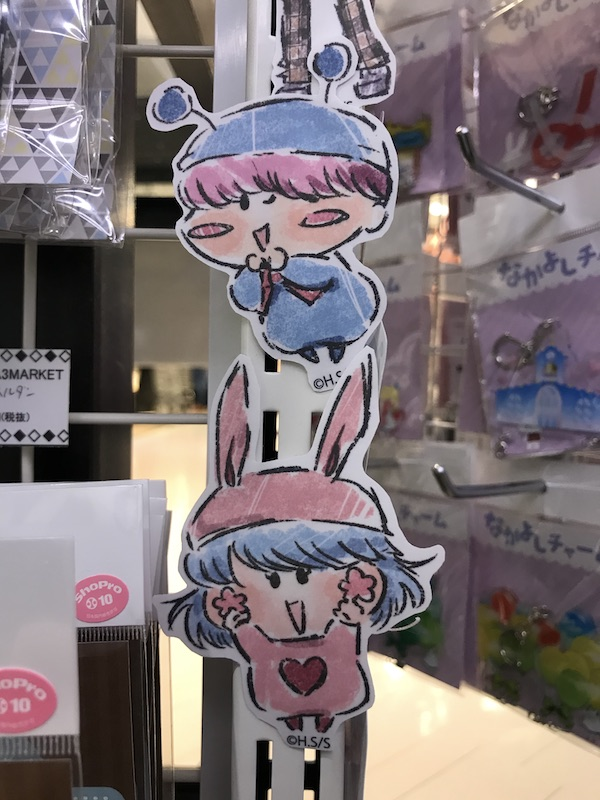
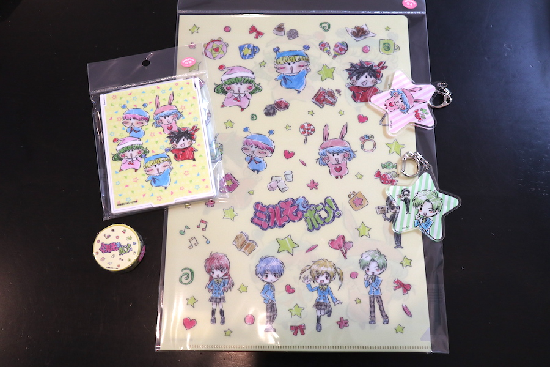
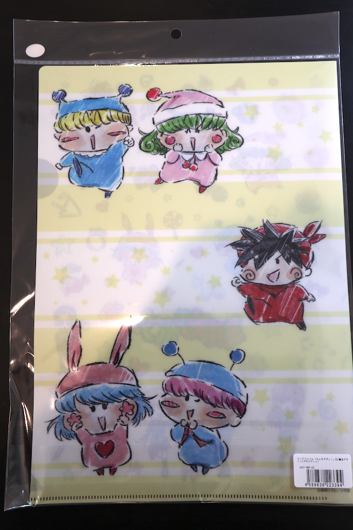
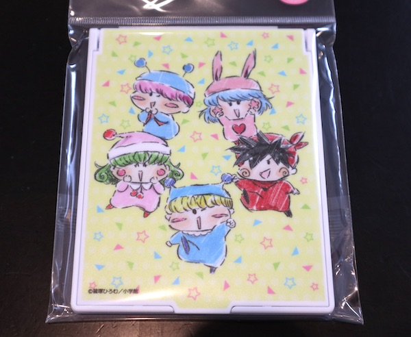
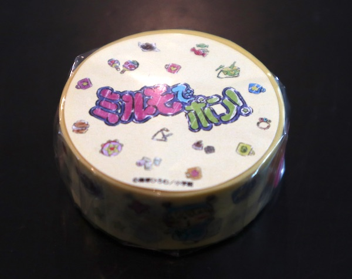
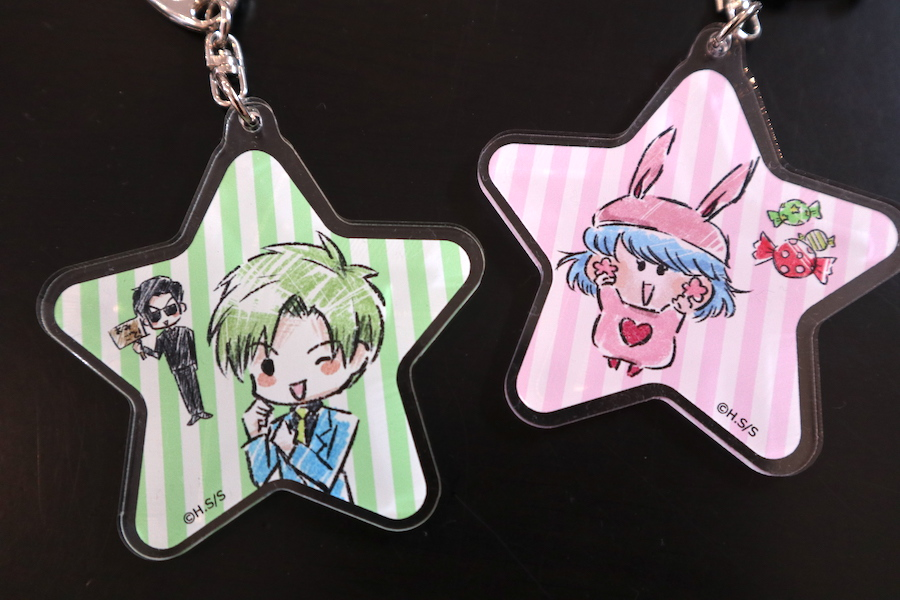
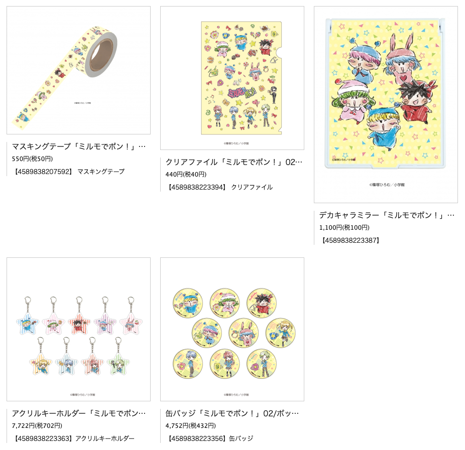

こちらで紹介しましたグラフアートイラストのミルモグッズが予定通り２０２０年３月７日に発売されました。
さっそく私もグッズの一部をゲットしましたので、レポートしたいと思います。

東京エリアでの発売場所は、P'PARCOの４階にあるGraffart Shopです（１月のミルモグッズと同じ）。
ちなみに数ヶ月前は、P'PARCKの看板の左側にニコニコ本社の看板もありましたが、ニコニコ本社は少し前に移転となり、跡形もなく無くなっていました。

今回は私用のため、発売開始から３時間遅れの14時頃にお店に到着！
昨今の新型コロナウィルスの影響もあり店内はお客さん少なめでしたが、すべてのミルモグッズが店頭にずらっと並んでいました。

店内のPOPは前回と今回のイラストが縦に並んでいて、わいわいがやがや、にぎやかでかわいい！
店員さんのセンスとミルモ愛を感じますね(^^)

ムルパピ！！！ 二人の距離が近いっ！

今回私が購入したミルモグッズです。
（今回も予算の都合で全部は買えず・・(T-T)）
・クリアファイル
・デカキャラミラー
・マスキングテープ
・アクリルキーホルダーx2

クリアファイルの反対側はこんな感じ。

デカキャラミラーは実用性もありそうな大きめサイズでできています。

マスキングテープです。もったいなくて使えない！？

９種類の缶バッジを２つ買ったら、松竹くんとパピィちゃんという不思議な組み合わせが当たりました。
連載終了から10年以上も経っているのに、こうして新たなミルモグッズを買えるのは感激ものですね。
ファンとしては次のミルモグッズに期待せずにはいられないので、ぜひともグラフアートさんには新商品の商品化と販売をお願いしたいです。
最後に記録として、通販サイトの画像をお借りして今回発売されたグッズの情報を残しておきたいと思います。

(2020/3/17)